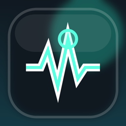

一句话诊断
根据 CPU、内存、Swap、压缩内存和进程压力生成健康分数与诊断结论。

PulseDockmacOS 13+ · SwiftUI · Local-first
PulseDock 常驻菜单栏，查看 CPU、内存、磁盘、网络、进程、电池和热状态，并把当前性能压力整理成可读的诊断结论。
先判断当前压力来源，再查看关键指标。
Swap 偏高，当前卡顿更可能来自内存压力。
MEM 64% · Swap 2.94 GB
Features
PulseDock 把常见指标压缩成诊断、证据和低风险建议，适合开发者和重度 Mac 用户日常常驻。
根据 CPU、内存、Swap、压缩内存和进程压力生成健康分数与诊断结论。
识别 IDEA、Java、Gradle、Xcode、Docker、Node、Chrome、Codex 等常见开发负载。
紧凑弹窗适合快速查看，桌面端提供进程详情、指标分组、设置和关于页面。
保存本地短期趋势，支持开关、保留时间和清除历史，不上传性能数据。
Privacy
PulseDock 只在本机采集性能诊断所需信息。历史趋势保存在本机，关闭历史记录或清除历史后会停止写入并移除本地样本。
0.1.0
当前版本尚未签名和公证，硬件传感器会谨慎显示不可用，不伪造温度、GPU 或风扇数据。
macOS 13 Ventura 或更新版本。当前 DMG 主要面向 Apple Silicon Mac 构建。
下载 DMG 后，将 PulseDock.app 拖到 Applications，再从应用程序启动。